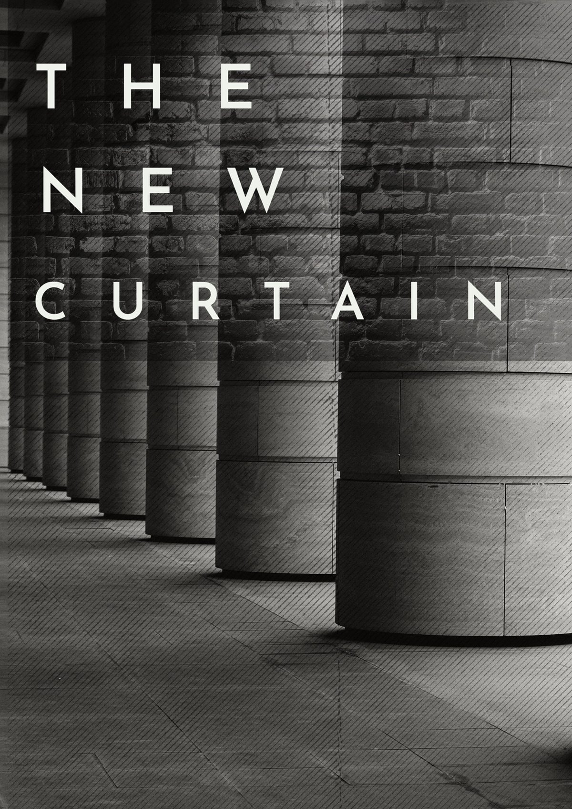

In 1989, I was ten years old and living in Poland. For years, life had been shaped by austerity and poverty caused by the communist regime. Shops were often empty, yet television propaganda kept insisting that we lived in a prosperous and happy country. Still, something was beginning to change. The tension between the communist government and ordinary citizens slowly started to ease.
Then came the Round Table talks. Communist leaders and underground opposition activists, people once called traitors and enemies of the state, sat together to negotiate Poland’s future. Out of those discussions came the first steps toward a free government and a new Poland. Even as a child, I could feel the atmosphere changing. There was a sense of hope in the air, as if the whole country had finally opened a window after years in darkness. For the first time, public television began showing glimpses of the outside world instead of endless propaganda. Western countries no longer seemed like distant myths. At school, I started learning English, and Western values, freedom, democracy, opportunity suddenly became real and meaningful concepts rather than forbidden ideas.
In the early 90s my parents took us on our first trip abroad. We travelled to Holland to visit their friends. For me, it was the journey of a lifetime. I was fascinated by everything: the roads, the shops, the colours, the freedom, the feeling that life could look completely different from what I had known. On the way, we were stopped by West German police. Our old car, with license plates from the former Eastern Bloc, immediately drew attention and carried a certain stigma. But even that moment could not diminish my excitement. I was finally seeing the West I had only heard about in my father’s stories.
That trip became more than a family holiday. It was my first real glimpse of another world a world that suddenly no longer felt unreachable. Looking back, I realise I was witnessing not only my own childhood adventure, but also the birth of a new era for Poland and for millions of people across Eastern Europe.
Another experience that shaped my life came years later, when I took part in a student exchange program in Kaunas. Living and studying there gave me the opportunity to meet Erasmus students from all over the world. It was, without a doubt, one of the happiest and most exciting periods of my life. For the first time, I was surrounded by people from different countries, cultures, and backgrounds. Every conversation felt like opening a new window onto the world. We shared stories, traditions, music, languages, and ideas about life. Those experiences changed me deeply. As a child in communist Poland, the world beyond Eastern Europe had seemed distant and almost unreachable. But years later, through travel, friendships, and international exchange, the world suddenly became open and connected.
My time studying in different country made me realize how much more there was to discover and learn, and experience beyond the borders of my home country. It awakened a curiosity that never disappeared. In many ways, that period influenced one of the biggest decisions of my life: emigrating after university. I knew I wanted to continue exploring the world, meeting new people, and learning from different cultures.
Packing up my whole life and moving to Britain felt surreal. It was like getting onto a boat with a hole in it, hoping it would carry me safely to shore. At the beginning of my journey as an immigrant, I was focused on getting through the transition without fully realising the challenges. I chose to focus on the positive aspects, and that became one of the greatest lessons in resilience. When I arrived, I remember breathing the fresh air and feeling the calming breeze, a reminder of the beauty of living on an island. Over time, I learned humility, patience, and greater tolerance. I built meaningful friendships, found my place, and eventually Britain became my home and I also have found love here.
Ten years after living in the United Kingdom, I woke up in a country where the free movement of people has been replaced by border enforcement. The public rhetoric about external threats now closely resembles the divisive language once used in communist propaganda, creating a sharp divide between "them" and "us" within society and evoking the same feeling of limitation. As a child, I heard about threats from West to communism. Now, I hear threats from immigration to British, American or Polish values, but the walls are built by those who profit from them.